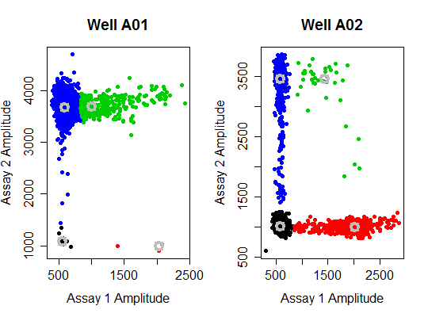

bioamp(data = data, amp_x = 1, amp_y = 2, cluster = 3, robust = TRUE, plot = TRUE, stat = TRUE, xlab = "Assay 1 Amplitude", ylab = "Assay 2 Amplitude", ...)
what containing the amplitude data.TRUE, the plot is printed.TRUE, the statistics of the droplet digital
PCR experiment are calculated.plot function (see
plot.default for details).bioamp is a function to plot and analyze the amplitude data of a
BioRad droplet digital PCR experiment.
par(mfrow = c(1,2)) bioamp(data = pds_raw[["A01"]], main = "Well A01", pch = 19)Cluster.4 Cluster.1 Cluster.3 Cluster.2 Counts Ch. 1 11552.00000 11.00000 398.0000 3.00000 Counts Ch. 2 11552.00000 11.00000 398.0000 3.00000 Location Ch. 1 590.94425 553.69556 995.2142 2026.70093 Location Ch. 2 3676.18494 1084.54590 3694.3724 995.84230 Dispersion Ch. 1 51.25585 24.43643 182.0612 80.47304 Dispersion Ch. 2 115.59810 84.69588 136.8308 32.88620bioamp(data = pds_raw[["A02"]], main = "Well A02", pch = 19)
Cluster.1 Cluster.4 Cluster.2 Cluster.3 Counts Ch. 1 9781.00000 587.00000 792.00000 38.0000 Counts Ch. 2 9781.00000 587.00000 792.00000 38.0000 Location Ch. 1 579.75195 586.43384 2016.80012 1427.3433 Location Ch. 2 1015.20868 3465.11963 999.26620 3468.6197 Dispersion Ch. 1 40.21337 46.17048 177.15604 352.1041 Dispersion Ch. 2 50.94112 159.30630 58.83233 183.7515par(mfrow = c(1,1))